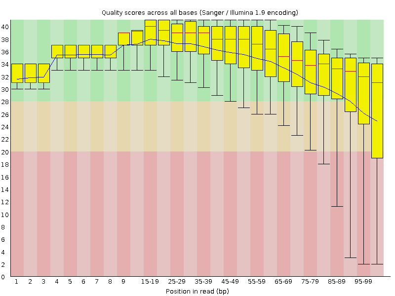
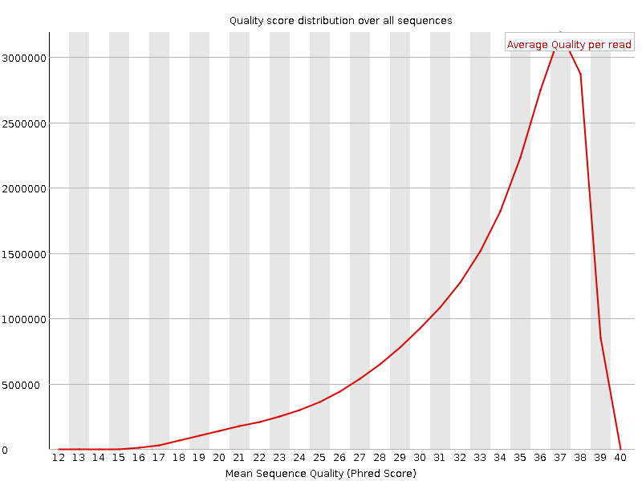
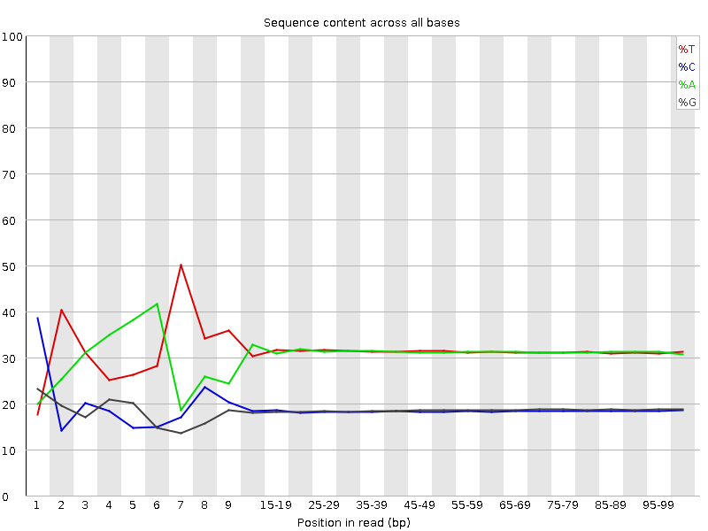
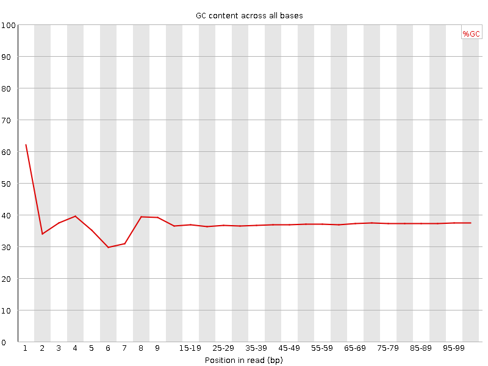
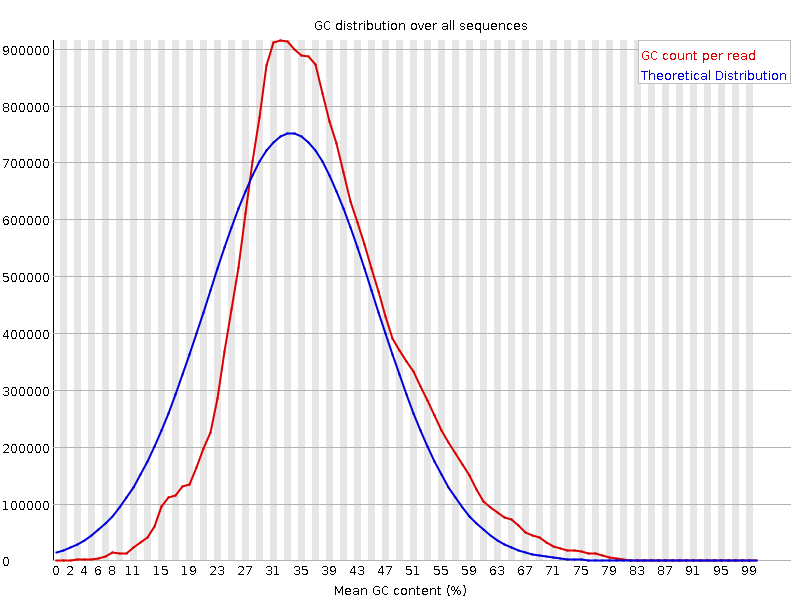
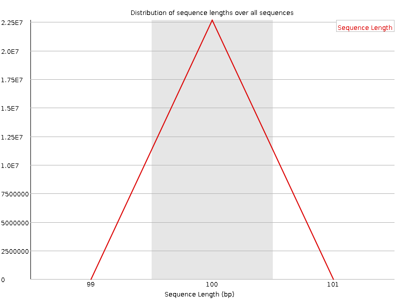
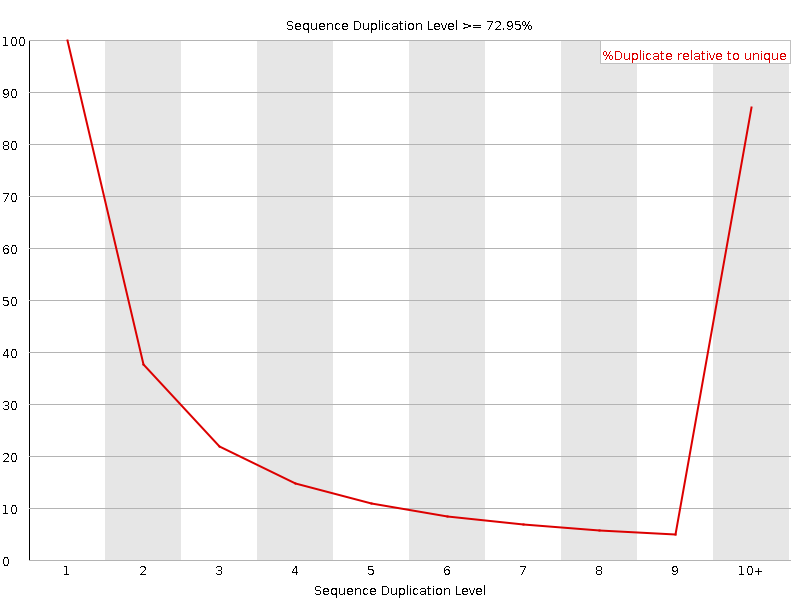
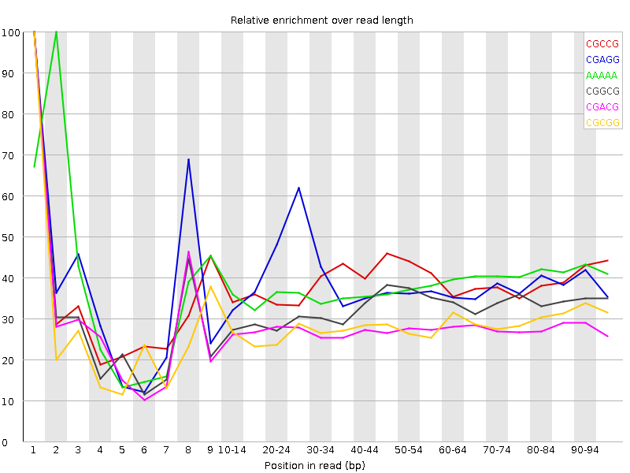

![[OK]](Icons/tick.png) Basic Statistics
Basic Statistics
| Measure | Value |
|---|---|
| Filename | t1_1.fq |
| File type | Conventional base calls |
| Encoding | Sanger / Illumina 1.9 |
| Total Sequences | 22658937 |
| Filtered Sequences | 0 |
| Sequence length | 100 |
| %GC | 37 |
Per base sequence quality

Per sequence quality scores

![[FAIL]](Icons/error.png) Per base sequence content
Per base sequence content

Per base GC content

![[WARN]](Icons/warning.png) Per sequence GC content
Per sequence GC content

Per base N content

Sequence Length Distribution

Sequence Duplication Levels

Overrepresented sequences
| Sequence | Count | Percentage | Possible Source |
|---|---|---|---|
| CTAATTTTCATCTTAATTCAACATCGAGGTCGCAAACATCTTTATCTATA | 47481 | 0.20954645842388814 | No Hit |
| CTTTCGTACAATTAATTAATATTTTATTATAGATAGAAACCAATCTGACT | 41231 | 0.18196352282545294 | No Hit |
Kmer Content

| Sequence | Count | Obs/Exp Overall | Obs/Exp Max | Max Obs/Exp Position |
|---|---|---|---|---|
| CGCCG | 1074305 | 2.1964664 | 5.6879473 | 1 |
| CGAGG | 1785300 | 2.1822705 | 5.58746 | 1 |
| AAAAA | 14179490 | 2.1744986 | 5.6885962 | 2 |
| CGGCG | 966365 | 1.9809192 | 6.05511 | 1 |
| CGACG | 1613285 | 1.9668889 | 7.080936 | 1 |
| CGCGG | 882395 | 1.8087921 | 6.371055 | 1 |
| TCGAG | 2431955 | 1.7589458 | 5.322354 | 7 |
| CTCGA | 2379895 | 1.7168252 | 7.337986 | 1 |
| CTGGA | 2289115 | 1.6556348 | 6.476731 | 1 |
| CGCGA | 1356580 | 1.6539186 | 6.2163076 | 1 |
| CGCCA | 1319125 | 1.6040802 | 5.4212837 | 1 |
| CCGGC | 771460 | 1.5772856 | 6.2740197 | 1 |
| CGATC | 2172620 | 1.5672995 | 5.0658364 | 4 |
| ATCGA | 3554625 | 1.5290928 | 5.4652996 | 6 |
| GTCGA | 2059670 | 1.4896854 | 5.3657894 | 1 |
| CTTTC | 3418750 | 1.4517488 | 5.707195 | 1 |
| CTCGC | 1175675 | 1.4222755 | 5.4752507 | 1 |
| CTCGT | 1917350 | 1.376024 | 6.038624 | 1 |
| CTCGG | 1118275 | 1.3563563 | 6.515067 | 1 |
| GAATC | 2719955 | 1.1700429 | 5.116106 | 4 |